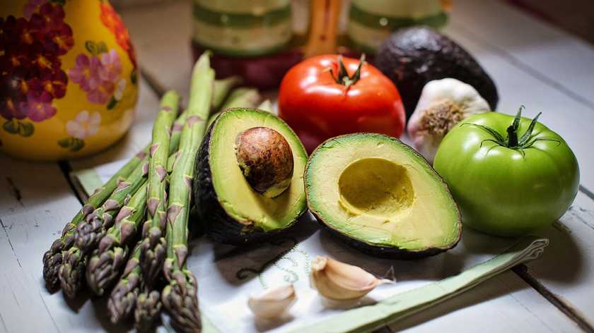

Білок – один з найважливіших "будівельних" матеріалів, який необхідний для повноцінного функціонування нашого організму. Раніше вважалося, що достатню кількість білка можна отримати лише з продуктів тваринного походження. Сучасні дослідження й думки експертів довели, що це – звичайнісінький міф.
Збалансоване харчування (правильне співвідношення білків, жирів та вуглеводів) – запорука здоров'я, стрункості й довголіття.
Однак що робити людині, яка вирішила відмовитися від білків тваринного походження? На щастя, достатню кількість білка можна отримати з безлічі рослинних продуктів.